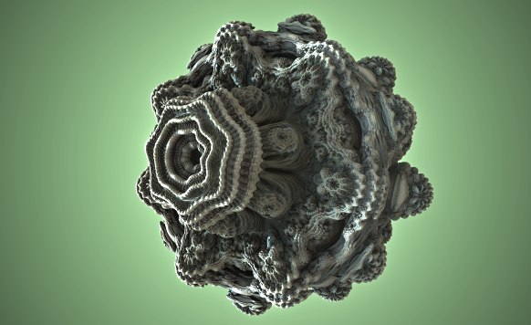

The Fractal Factory
Title, Summary, Team Members
Title
- The Fractal Factory
Summary
- We are writing a ray marcher that renders 3D fractals in real time.
Team Members
- Kyle Zhang
SID 3034586959
kylezzhang@berkeley.edu - Shreyas Kompalli
SID 3034741061
shreyaskompalli@berkeley.edu - Aram Kazorian
SID 3034819659
aramk@berkeley.edu - Linda Deng
SID 3034206348
deng22@berkeley.edu
Problem Description
Problem Description
- The problem we are trying to solve is how to render the process of fractals growing infinitely in real time.
Why it is important
- This system to render fractals in real time is important since it expresses the beauty of mathematics visually. Compared to static images of fractals, the real time rendering brings the beauty to another level. Also, since fractal patterns exist on various real life objects, being able to render fractals in real time can also be beneficial in rendering other objects in the future. Last but not least, this project is important because we are exploring a different method of rendering that is not rasterization nor ray tracing, but ray marching.
Where it is challenging
- We are tackling a whole different method of rendering graphics that was not covered in this course before.
- The results we hope to achieve are incredibly visually complex and intricate
- We want to be able to achieve this rendering in real time, which means our algorithms must be quick
General idea of solution
- We will be using a compute shader in Unity to write a ray marcher that can render scenes given the intersection functions for primitives in the scene. The Unity game engine will provide us with a good cross-platform way to render shaders without having to interact with C++ and not much else; the rest of the renderer will be completely implemented by us. Given the intersection function for some 3D fractal, we will be able to plug it in and render it with our ray marcher.
Goals and Deliverables
What we are trying to accomplish
- We want to create a system that can render any 3D fractal with a given intersection function.
Photos of what we are trying to create
- http://blog.hvidtfeldts.net/media/mbulb3.jpg
- https://i.stack.imgur.com/kEQiO.png
 https://upload.wikimedia.org/wikipedia/commons/8/8b/Sierpinski_tetrahedron_by_George_W._Hart.jpg
https://upload.wikimedia.org/wikipedia/commons/8/8b/Sierpinski_tetrahedron_by_George_W._Hart.jpg - http://blog.hvidtfeldts.net/media/m3d4.jpg
How the quality/performance of our system will be measured
- We can measure the frame rate of the system as it renders the fractal to see how efficient our code is. Also, we can compare the reference images of various fractal patterns to the ones that we generate to judge the goodness of our system.
Questions that will be answered
- How do we render 3D fractals?
- How do various fractal intersection functions affect the output? For instance, what kinds of functions lead to fractals that output flower-like patterns, circular patterns, cube-based patterns, etc?
- How does a ray marcher work?
- How can lighting effects be applied to fractals?
- How does making the code faster/more efficient change the fractal? What is the tradeoff between speed and quality?
Deliverables
What we plan on delivering
- 3D Fractals rendered in real time (>30 FPS)
- Shadows and diffuse shading on the fractals
What we hope to deliver (stretch goals)
- Interactivity with the scene (one of the following):
- Being able to input various fractal functions and seeing the resulting fractal pattern
- Moving the camera around the scene to observe the fractal pattern from various angles
- Each iteration of the fractal pattern is controllable by the user. For instance, they can choose to see the first, second, third, etc. iterations of the fractal as it’s being generated (this is probably pretty hard)
- Additional lighting effects like ambient occlusion, soft shadows, glow
Schedule
Week 1
- Read/watch resources to understand the approach and the math behind it. Familiarize ourselves with the software we are using.
Week 2
- Write a basic ray marcher that can render cubes/spheres with no lighting effects or shadows.
Week 3
- Add lighting effects and shadows.
Week 4
- Extend ray marcher to support fractals.
Resources
Online Resources
- https://iquilezles.org/www/articles/distfunctions/distfunctions.htm
- http://jamie-wong.com/2016/07/15/ray-marching-signed-distance-functions/#the-raymarching-algorithm
- http://blog.hvidtfeldts.net/index.php/2011/09/distance-estimated-3d-fractals-v-the-mandelbulb-different-de-approximations/
- https://www.youtube.com/watch?v=svLzmFuSBhk
- https://www.youtube.com/watch?v=Cp5WWtMoeKg
Computing Platforms
- Mac OS X (Intel & M1), Windows 10, Fedora 34
Software Used
- Unity game engine
- C#
- HLSL
{kind=link}
{kind=link}
{kind=link}
{kind=link}